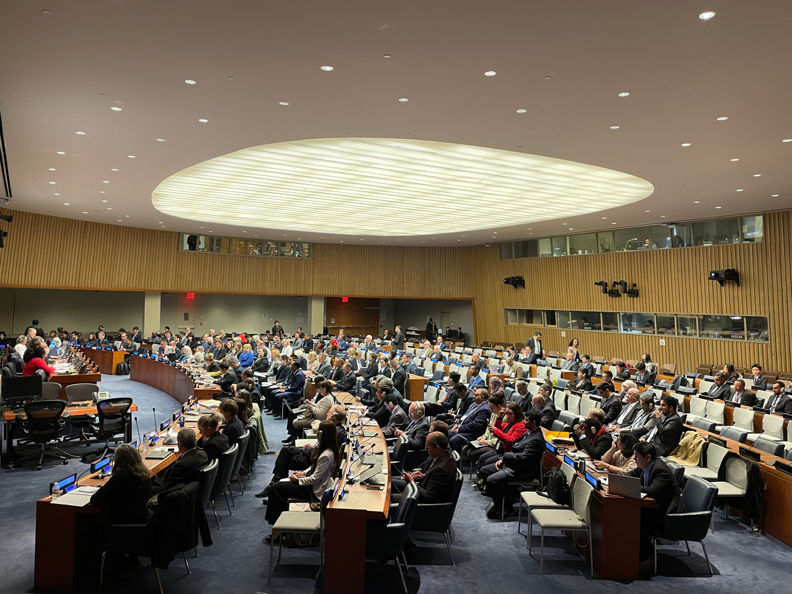
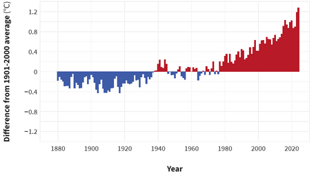
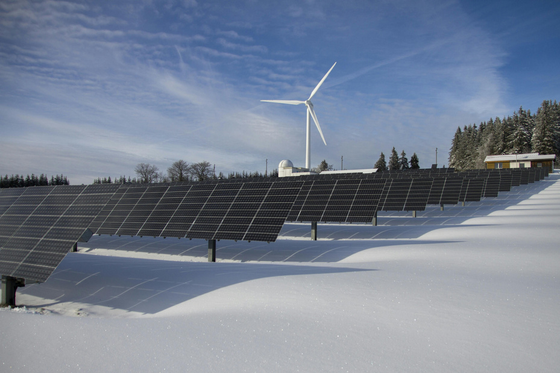
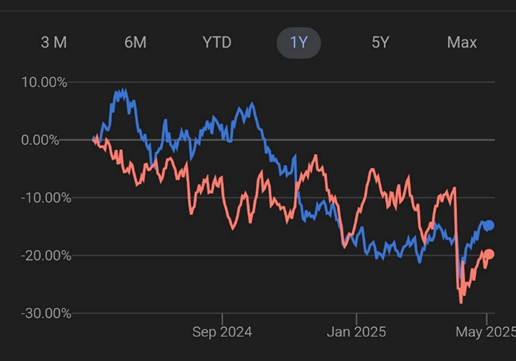

The inflation crisis was caused by massive overspending and escalating energy prices, and that is why today I will also declare a national energy emergency. We will drill, baby, drill.
— President Donald J. Trump, Inaugural Address (2025)
Looking into economics, and most likely every single discipline, the term we have heard, as you'd appreciate, is sustainability. Due to natural resources that have been exploited since we tried to enhance our prosperity, and due to the global climate crisis, it has high importance and should be integrated into all components of daily life. Besides coming across the term sustainability many times, have you thought about the term itself?
Let us look at sustainability by diving deep into its terminology. To sustain means causing or allowing something to continue for a period. So, to sustain something is to let or support it to continue to exist. And if something is eligible, supposed to, or must exist, it is sustainable.
What sustainability means
The reason why it is a trending term day by day is that the world we live in is becoming increasingly unsustainable. Thus, sustainability is more than just a popular buzzword. It is a broad concept that questions how resources are used, how economic growth, and consequently increased welfare, is structured, and how long-term sustainability can be achieved. Conventional growth has often focused on short-term profit or expansion, with little attention paid to environmental consequences. This approach has led to the overuse of natural resources, the destruction of ecosystems, and global warming, which has caused global temperatures to rise by approximately 1.1°C above pre-industrial levels. Projections suggest that this could exceed 2.6 to 2.8°C by the end of the century.
Unsustainable economic practices exploit finite resources, leaving future generations with a damaged planet.
Sustainability is often divided into three pillars: environmental, social, and economic. These pillars aim to balance the needs of the present without borrowing from future generations to meet our own. Environmental sustainability focuses on using natural resources responsibly and minimizing harm to our planet. This includes practices such as reducing carbon emissions, managing waste, and conserving biodiversity, especially considering that nearly 1 million species are currently at risk of extinction, according to the UN. On the economic side, a sustainable economy supports clean energy, the responsible use of resources, and reduced pollution—factors that are expected to be beneficial for the future.

Lastly, social sustainability addresses issues of equity, justice, and quality of life. It involves ensuring that economic systems provide fair opportunities for everyone, promote social cohesion, and protect human rights. For an economy to be truly sustainable, it must support communities, have decent jobs, and provide access to essential services like healthcare, education, and housing.


Economic sustainability and long-term growth
Economic sustainability offers practices that are financially viable in the long term. It is about ensuring that economies can continue to grow without overutilizing natural and financial resources that would lead to financial or climate crises. This means investing in practices that are both economically profitable and environmentally responsible, and supporting policies that promote innovation, efficiency, and long-term value. While achieving sustainability on a global scale is complex, it is essential for ensuring that the future world is a place that is not harmed.
The world's current direction, with "high support" from overconsumption, resource depletion, and environmental destruction, is unsustainable. By rethinking how we define progress and success, we should reshape our habits that do not prioritize sustainability. Yet it is a trend now; sustainability is not (and should not be) a passing trend or an isolated issue for only a few people or disciplines. It is actually at the heart of the future economy. From policy decisions to business strategies and individual choices, implementing sustainability into all aspects of our lives can ensure a balanced and livable world for generations to come. It is a shared responsibility that if taken seriously, can lead to a more stable, and environmentally, economically, and socially healthy world.
Policy divergence and the 2024 U.S. election
However, it is not something that individuals can overcome alone. For instance, President Donald Trump's second term has seen many developments that contradict the sustainability efforts trending worldwide, especially in recent years. President Trump's skepticism toward sustainability did not begin with his second term; it has been rooted in his views for years.
To be fair, Trump's skepticism toward environmental efforts did not begin with his second term—it has been a long-standing stance. He has argued that environmental regulations hurt U.S. economic growth and threaten energy security. As far back as 2012, Trump tweeted that "global warming is made up by China to stop U.S. production," clearly stating his position on climate issues. In 2013, he questioned "It's freezing outside, where the hell is global warming?" Since his reelection, not only has it been signaled, but policies prioritizing oil and gas production over renewable energy have also been actively pursued. Green energy projects have been cancelled, and support for fossil fuels has expanded.
Looking at the policies favored by past U.S. presidents reveals a clear pattern: Democratic leaders generally support clean energy, while Republican leaders often advocate for traditional energy sources. This divide was evident again in the last election, where Donald Trump and Democratic candidate Kamala Harris presented sharply opposing energy agendas. It became somewhat easier to predict the outcome of the election.

Market signals and investor sentiment
As Dow Theory suggests, the stock market discounts all available information, and financial markets quickly anticipate the next president. The chart below compares two ETFs: the iShares U.S. Oil & Gas Production ETF (IEO) in red and the iShares Clean Energy ETF (ICLN) in blue. After the November 2024 election, investors appeared to anticipate the direction of Trump's second term—oil and gas stocks surged, while clean energy stocks declined. This suggests that capital began favoring traditional methods of energy production over sustainable alternatives.

The signal is clear: under Trump's governance, the United States has stepped back from sustainability efforts, at least at the federal level, as individual states may act differently. While many other countries are advancing in climate action and clean energy initiatives, the U.S. is unlikely to be perceived as a global leader in sustainability during this period.
Selected references
- Trump, D. J. (2025, January 20). The inaugural address. The White House. https://www.whitehouse.gov/remarks/2025/01/the-inaugural-address/
- BlackRock. (n.d.). iShares Global Clean Energy ETF (ICLN). https://www.ishares.com/us/products/239738/ishares-global-clean-energy-etf
- BlackRock. (n.d.). iShares U.S. Oil & Gas Exploration & Production ETF (IEO). https://www.ishares.com/us/products/239517/ishares-us-oil-gas-exploration-production-etf